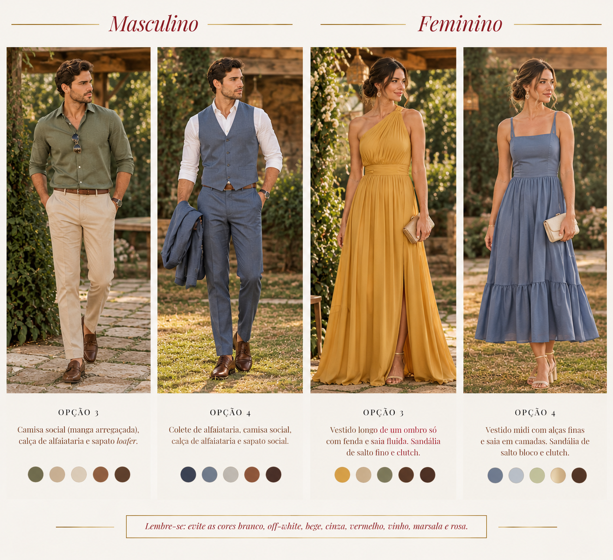
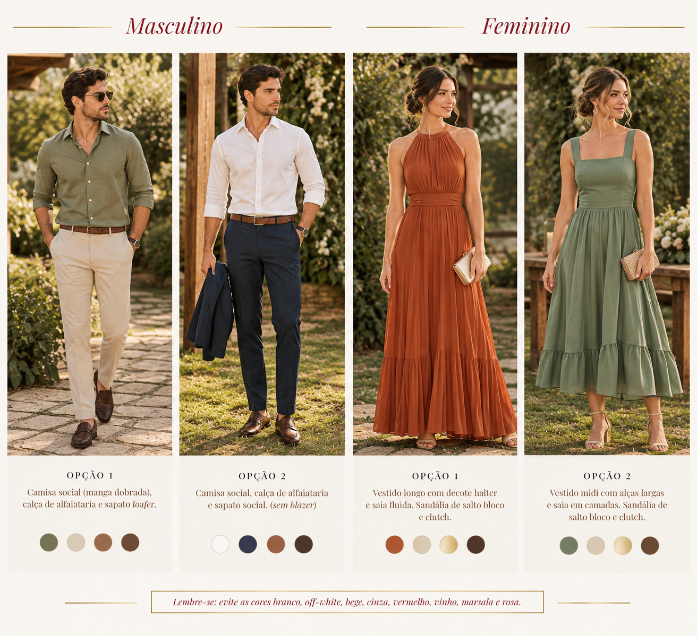

Bárbara & João Vitor
11.12.2026
Olá, queridos
É com muito carinho que apresentamos esse guia sobre nosso grande dia!
Aqui, vocês encontrarão informações e dicas importantes para viver esse momento tão especial conosco. Então, não deixem de lê-lo por inteiro!
Tudo foi pensado e feito com muito cuidado e dedicação e esperamos que esse guia possa ajudá-los bastante.
Até breve!
Bárbara e João Vitor
A cidade de Natal, no estado do Rio Grande do Norte, é também conhecida por outro nome: “A cidade do Sol”. Possui, aproximadamente, 750 mil habitantes. Na região metropolitana, o número ultrapassa 1,5 milhão de habitantes.
Os meses de novembro, dezembro e janeiro contam com dias ensolarados, poucas chuvas, ventos litorâneos constantes e temperaturas que variam de 24°C a 30°C.
Os pontos turísticos de maior destaque são:
Apesar de ser uma cidade cheia de atrativos e de beleza ímpar, sugerimos evitar os seguintes lugares (por questões de segurança): Bairros Mãe Luiza, Felipe Camarão, Quintas, Planalto, Rocas, Pajuçara, Nossa Senhora da Apresentação e Santos Reis; Praia do Meio, Praia dos Artistas e Praia do Forte.
Sugerimos os seguintes bairros para hospedagem e passeios/circulação: Ponta Negra, Lagoa Nova, Via Costeira Candelária e Petrópolis.
O Aeroporto Internacional de Natal-Governador Aluízio Alves (NAT), localizado no Município de São Gonçalo do Amarante, fica a aproximadamente 1 hora da capital Natal. O deslocamento pode ser feito por carro, através de táxis locais, transporte por aplicativo, transfer ou aluguel de veículos. Optem pelo que melhor os atende.
O casamento será realizado no município de Extremoz-RN, com distância de, aproximadamente, 40 min do Bairro de Ponta Negra, município de Natal. Recomendamos a programação para chegada com antecedência no local, pois a entrada de convidados não será mais permitida depois das 15h50, visando o melhor aproveitamento do pôr do sol da cidade.
Conheça mais sobre o local de realização da celebração:
@poramorrecepcoes · Como chegar
Queremos viver cada momento da melhor forma com todos vocês! Então, gentilmente, pedimos que permaneçam offline durante toda a celebração religiosa, mantendo seus telefones e demais equipamentos eletrônicos no modo silencioso. Fotos e vídeos serão permitidos, desde que o modo flash também esteja desligado e os registros não causem descompassos à operação dos fotógrafos e cinegrafista.
Por exigência eclesiástica, o consumo de quaisquer tipos de comidas e bebidas antes e durante a cerimônia é vetado.
O momento de comemorar da melhor forma possível! Comam, bebam (com moderação), tirem fotos e gravem vídeos, dancem ao som da setlist especialmente selecionada por nós e se divirtam muito conosco!
Sugestões:
Confira as sugestões abaixo para encontrar uma combinação elegante e confortável para o nosso grande dia.


Pedimos que não utilizem trajes nas seguintes cores (incluindo todos os seus tons e subtons): Branco, Off-White, Bege, Cinza, Vermelho, Vinho, Marsala e Rosa. Elas são de uso exclusivo dos noivos e dos membros do cortejo.
Para os convidados que estão em busca de trajes para o grande dia!
Alguns desses locais dispõem de mais de uma filial, além de trajes para ambos. Consulte informações pelos contatos informados se precisar!
Queridos convidados, o convite digital tem a finalidade de informá-los e, principalmente, ratificar suas presenças. Por gentileza, não esqueçam de confirmá-las de forma individual (por nome do(a) convidado(a)) no link enviado na mensagem enviada junto ao convite.
Todos os detalhes foram planejados para a realização de um evento intimista. Dessa forma, lembramos que o convite de casamento é pessoal e intransferível a outra(s) pessoa(s) além das nomeadas nele. Pedimos, gentilmente, que o convite, esse guia e informações sobre o casamento não sejam compartilhados nas redes sociais e/ou com outras pessoas até o grande dia, mantendo a discrição que desejamos para esse momento que está chegando.
Em caso de qualquer dúvida, não hesitem em entrar em contato! Seja antes e/ou durante o evento, a missão de tornar o contato entre todos nós mais próximo e sanar todas as questões que vocês possam ter para serem esclarecidas foi confiada, especialmente, à equipe da Perez Assessoria e Cerimonial. Tudo pensado para o melhor aproveitamento e conforto, e menor preocupação possível para todos, a todo momento.
Nos vemos no